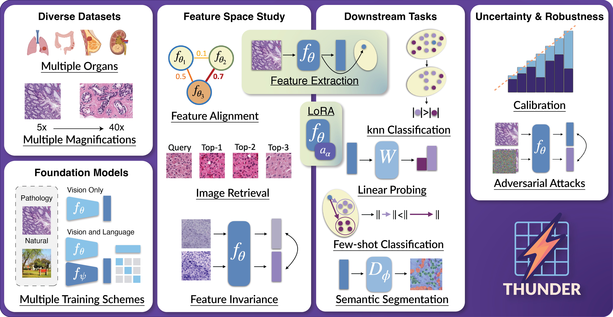

Tile-level Histopathology image Understanding benchmark
We introduce THUNDER, a comprehensive benchmark designed to rigorously compare foundation models across various downstream tasks in computational pathology. THUNDER enables the evaluation and analysis of feature representations, robustness, and uncertainty quantification of these models across different datasets. Our benchmark encompasses a diverse collection of well-established datasets, covering multiple cancer types, image magnifications, and varying image and sample sizes. We propose an extensive set of tasks aimed at thoroughly assessing the capabilities and limitations of foundation models in digital pathology.
Overview
We propose a benchmark to compare and study foundation models across three axes: (i) downstream task performance, (ii) feature space comparisons, and (iii) uncertainty and robustness. Our current version integrates 23 foundation models, vision-only, vision-language, trained on pathology or natural images, on 16 datasets covering different magnifications and organs. THUNDER also supports the use of new user-defined models for direct comparisons.

Usage
An API and command line interface (CLI) are provided to allow users to download datasets, models, and run benchmarks. The API is designed to be user-friendly and allows for easy integration into existing workflows. The CLI provides a convenient way to access the same functionality from the command line.
Important
Downloading supported foundation models: you will have to visit the Huggingface URL of supported models you wish to use in order to accept usage conditions.
List of Huggingface URLs
API Usage
When using the API you can run the following code to download datasets, models and run a benchmark:
from thunder import benchmark
benchmark("phikon", "break_his", "knn")
CLI Usage
When using the CLI you can run the following command to see all available options,
thunder --help
In order to reproduce the above example you can run the following command:
thunder benchmark phikon break_his knn
Installing thunder
Code tested with Python 3.10. To replicate, you can create the following conda environment and activate it,
conda create -n thunder_env python=3.10
conda activate thunder_env
To install thunder run the following command:
pip install -e . # install the package in editable mode
pip install . # install the package
Available datasets
| Name | Benchmark name | Labels | Nb. classes | Organ(s) | Image size | Magnification | Nb. images |
|---|---|---|---|---|---|---|---|
| BACH | bach | Classif. | 4 | Breast | 1,536x2,048 | 20x | 408 |
| BRACS | bracs | Classif. | 7 | Breast | Variable | 40x | 4,539 |
| BreakHis | break_his | Classif. | 8 | Breast | 700x460 | 40x | 1,995 |
| Camelyon17 WILDS | wilds | Classif. | 2 | Breast | 96x96 | 10x | 302,436 |
| CCRCC | ccrcc | Classif. | 3 | Renal | 300x300 | 40x | 52,713 |
| CRC-100k | crc | Classif. | 9 | CRC | 224x224 | 20x | 107,180 |
| ESCA | esca | Classif. | 11 | Oeso. | 256x256 | 10x | 367,229 |
| MHIST | mhist | Classif. | 2 | CRC | 224x224 | 5x | 3,152 |
| Patch Camelyon | patch_camelyon | Classif. | 2 | Breast | 96x96 | 10x | 327,680 |
| SPIDER-Breast | spider_breast | Classif. | 18 | Breast | 224x224 | 20x | 92,892 |
| SPIDER-Colorectal | spider_colorectal | Classif. | 13 | CRC | 224x224 | 20x | 77,182 |
| SPIDER-Skin | spider_skin | Classif. | 24 | Skin | 224x224 | 20x | 159,854 |
| SPIDER-Thorax | spider_thorax | Classif. | 14 | Thorax | 224x224 | 20x | 78,307 |
| TCGA CRC-MSI | tcga_crc_msi | Classif. | 2 | CRC | 512x512 | 20x | 51,918 |
| TCGA TILS | tcga_tils | Classif. | 2 | Multi | 100x100 | 20x | 304,097 |
| TCGA Uniform | tcga_uniform | Classif. | 32 | Multi | 256x256 | 20x | 271,170 |
| Ocelot | ocelot | Segm. | 2 | Multi | 256x256 | 40x | 10,608 |
| PanNuke | pannuke | Segm. | 6 | Multi | 256x256 | 40x | 7,901. |
| SegPath Epithelial | segpath_epithelial | Segm. | 2 | Multi | 256x256 | 40x | 238,581 |
| SegPath Lymphocytes | segpath_lymphocytes | Segm. | 2 | Multi | 256x256 | 40x | 110,457 |
Supported foundation models
| Name | Benchmark name | Vision arch. | Params. | Training method | VLM | Pathology |
|---|---|---|---|---|---|---|
| GenBio−PathFM | genbio-pathfm | ViT-G/16 | 1.1B | DINOv3 + JEPA | x | |
| GIGAPATH | provgigapath | ViT-G/14 | 1.1B | DINOv2 | x | |
| HIBOU-B | hiboub | ViT-B/14 | 86M | DINOv2 | x | |
| HIBOU-L | hiboul | ViT-L/14 | 307M | DINOv2 | x | |
| H−OPTIMUS−0 | hoptimus0 | ViT-G/14 | 1.1B | DINOv2 | x | |
| H0-mini | h0mini | ViT-B/14 | 86M | DINOv2 (teacher: H−OPTIMUS−0) | x | |
| H−OPTIMUS−1 | hoptimus1 | ViT-G/14 | 1.1B | DINOv2 | x | |
| KAIKO-S/8 | kaiko_vits8 | ViT-S/8 | 22M | DINO | x | |
| KAIKO-S/16 | kaiko_vits16 | ViT-S/16 | 22M | DINO | x | |
| KAIKO-B/8 | kaiko_vitb8 | ViT-B/8 | 86M | DINO | x | |
| KAIKO-B/16 | kaiko_vitb16 | ViT-B/16 | 86M | DINO | x | |
| MIDNIGHT | midnight | ViT-G/14 | 1.1B | DINOv2 | x | |
| OpenMidnight | openmidnight | ViT-G/14 | 1.1B | DINOv2 | x | |
| PHIKON | phikon | ViT-B/16 | 86M | iBOT | x | |
| PHIKON2 | phikon2 | ViT-L/16 | 307M | DINOv2 | x | |
| UNI | uni | ViT-L/16 | 307M | DINOv2 | x | |
| UNI2-H | uni2h | ViT-H/14 | 681M | DINOv2 | x | |
| VIRCHOW | virchow | ViT-H/14 | 632M | DINOv2 | x | |
| VIRCHOW2 | virchow2 | ViT-H/14 | 632M | DINOv2 | x | |
| CONCH | conch | ViT-B/16 | 86M | CoCa, iBOT | x | x |
| CONCH 1.5 | titan | ViT-L/16 | 307M | CoCa | x | x |
| KEEP | keep | ViT-L/16 | 307M | CLIP | x | x |
| MUSK | musk | V-FFN | 202M | CoCa, BEiT-3 | x | x |
| PLIP | plip | ViT-B/32 | 86M | CLIP | x | x |
| QUILTNET | quiltnetb32 | ViT-B/32 | 86M | CLIP | x | x |
| DINOv2-B | dinov2base | ViT-B/14 | 86M | DINOv2 | ||
| DINOv2-L | dinov2large | ViT-L/14 | 307M | DINOv2 | ||
| DINOv3-S | dinov3vits16pretrainlvd1689m | ViT-S/16 | 22M | DINOv3 | ||
| DINOv3-B | dinov3vitb16pretrainlvd1689m | ViT-B/16 | 86M | DINOv3 | ||
| DINOv3-L | dinov3vitl16pretrainlvd1689m | ViT-L/16 | 307M | DINOv3 | ||
| ViT-B/16 | vitbasepatch16224in21k | ViT-B/16 | 86M | Imagenet | ||
| ViT-L/16 | vitlargepatch16224in21k | ViT-L/16 | 307M | Imagenet | ||
| CLIP-B/32 | clipvitbasepatch32 | ViT-B/32 | 86M | CLIP | x | |
| CLIP-L/14 | clipvitlargepatch14 | ViT-L/14 | 307M | CLIP | x |